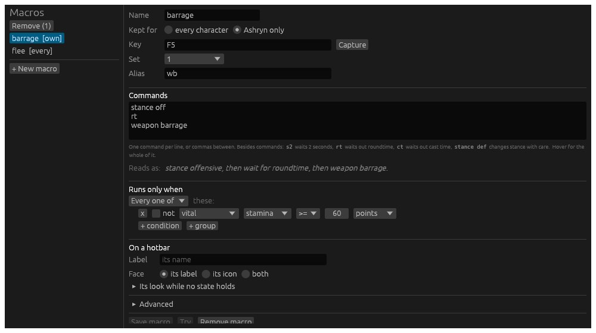

Macros
A macro has a name, its commands, and what it keeps: a key that runs it, a word that runs it from the command line, and the condition it runs under.
The editor
Open the Editors window at Macros: Menu › Editors › Macros. Every macro is listed on the left, everyone’s and this character’s own; the one chosen is in the form on the right. Every field says what it is for when you rest the pointer on it.

| Field | What it is |
|---|---|
| Name | One word. A key, a button, .macro and the alias run it by this. |
| Kept for | Every character, in macros.toml in the data folder; or this character alone, beside its layout. A character’s own macro replaces everyone’s of the same name. |
| Key | A key that runs it, written as the Keybinds page writes one: F5, Ctrl+Numpad8. Capture takes the next key you press. A keybind on the same key wins over it. |
| Set | The macro set the key is in, 0 to 9, or every set. |
| Alias | A word that runs it from the command line, and from a Lich script. It is kept as one of the character’s aliases; a word already an alias for something else is said when you save, and left as it was. |
| Commands | What it does, a piece per line or with commas between, in the chain language. The syntax is under the box; rest the pointer on it for the whole of it. Under that the commands are read back as a sentence, or refused with why, as you type. |
| Runs only when | The condition. With none, the macro always runs. |
| On a hotbar | How its button looks on every bar it is on: its Label (its name unless given), its Face (the label, an icon, or both), the Icon, and folded under it, its look while no state holds: what it reads, its colours, dimmed. |
| Advanced | Folded: a tooltip for its button, what its button counts down, how often it may run, and the states. |
Save macro keeps it where Kept for says. Try runs the commands on the character now, as the form has them, before you save. Remove macro takes it out of its file.
To take several away at once, pick them in the list: Ctrl and a click adds a macro to the picked, Shift and a click picks every one from the last clicked to it. Remove at the top of the list takes the picked ones away, asked first, and the Delete key does the same while no field is being typed in. Every editor’s list works this way: aliases, hotbars, highlights and stream rules too.
The condition
A macro runs only when its condition holds. Not holding, the macro is unavailable: its button greys, and a press, its key or its word sends nothing and the story says why. The condition is built as a trigger’s When is: tests, any one or every one of which must hold, each marked red or green as it holds on the character right now.
The tests are the triggers’ tests, and the ones a hunting script checks before a command. Against a bigshot command check:
| Test | What it reads | In bigshot |
|---|---|---|
| vital | health, mana, stamina or spirit, by percent or points | h50, m20, s30, v10 |
| encumbrance | the encumbrance percent | e50 |
| resource | shadow essence, the society’s resource this week or in all, covert arts charges | essence3 |
| effect up, effect not up, effect time left | a spell, buff, debuff or cooldown by name | ES"...", EB"...", EC"...", ED"...", barrage, flurry, rapid |
| indicator | hidden, poisoned, diseased, kneeling, prone, stunned and the rest | hidden, poison, disease, k |
| roundtime, casttime | under way | |
| target status | the target is stunned, prone, webbed, flying, calm, immobilized and the rest | stunned, prone, webbed, flying, frozen |
| target flag | the target is hostile, disengaged, dead, sympathetic, ascended, inferior, a boss, challenging, a rider, a mount | ascended, mini_boss, challenging |
| target kind | the target is undead, living or noncorporeal, by the bestiary | undead, noncorporeal |
| target health | the target’s health, by percent | thp20, wounded |
| creatures | how many creatures are in the room, or how many can be attacked | mob2, valid1 |
| hand empty, hand holds, spell prepared, spell affordable, stance, room, time of day, flag | the rest |
The target is the first creature in the room the character may attack. With no creature, every target test reads false.
A reserve is one test: stamina >= 60 points keeps sixty stamina
back for something else. Put it in Runs only when and the macro greys
under it. The manoeuvre’s own cost is the floor underneath: an assault
word never sends with less than it costs, whatever the condition.
How often it runs
Under Advanced, Again after holds the macro for so many seconds
after it ran: pressed sooner, it runs nothing and the story says so.
Once per room runs it once in a room: pressed again there, it runs
nothing until the character has moved. These are bigshot’s repeatdelay
and once.
States
Also under Advanced, for the few who want them: more logic, the first state whose condition holds deciding. A state can make the macro unavailable, run other commands instead of its own, count down something else, and give its button a look of its own: other words, other colours, dimmed, another icon. Each state is said as a sentence, starred while it decides, and warned when a state above it holds whenever it does, so it never decides. + State offers the states the macro’s commands suggest, a spell’s mana or roundtime, and one of your own. The condition above is enough for most macros.
In the file
[[macros]]
name = "barrage"
commands = """
stance off
rt
barrage
"""
key = "F5"
set = 1
alias = "wb"
when = { type = "vital", vital = "stamina", cmp = ">=", value = 60, unit = "absolute" }
repeat_after = 3.0
[[macros.states]]
when = { type = "indicator", id = "stunned" }
chain = "stance def"
From the command line
| Line | What it does |
|---|---|
.macro barrage | Runs it, when its condition holds. |
.macro | Every macro, with its commands, key and word. |
.macro show barrage | One macro, whole: its condition and states too. |
.macro alias barrage wb | Makes wb an alias that runs it. A word already taken is said, with how to overwrite it. |
A Lich script can run a macro the same way, since a .macro line typed
by a script is a line typed.
Examples
The stance dance. Two macros on two keys. F5: stance off, rt, barrage. F6: stance def. Press F6 straight after F5 and
Hydra waits the attack’s roundtime out before it asks for defensive.
A cast chain. stance off, prep 901, cast, rt, stance def: the prep
and the cast go at once, the cast’s roundtime is waited for, then the
stance comes back.
A finisher. barrage that runs only when the target’s health
is at or under 20%: the button greys until the creature is nearly down.
A reserve. barrage that runs only when stamina is at least 60 keeps
enough for a second manoeuvre you may need more.